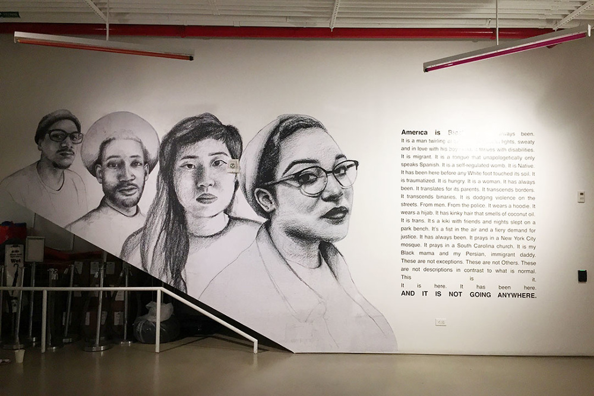
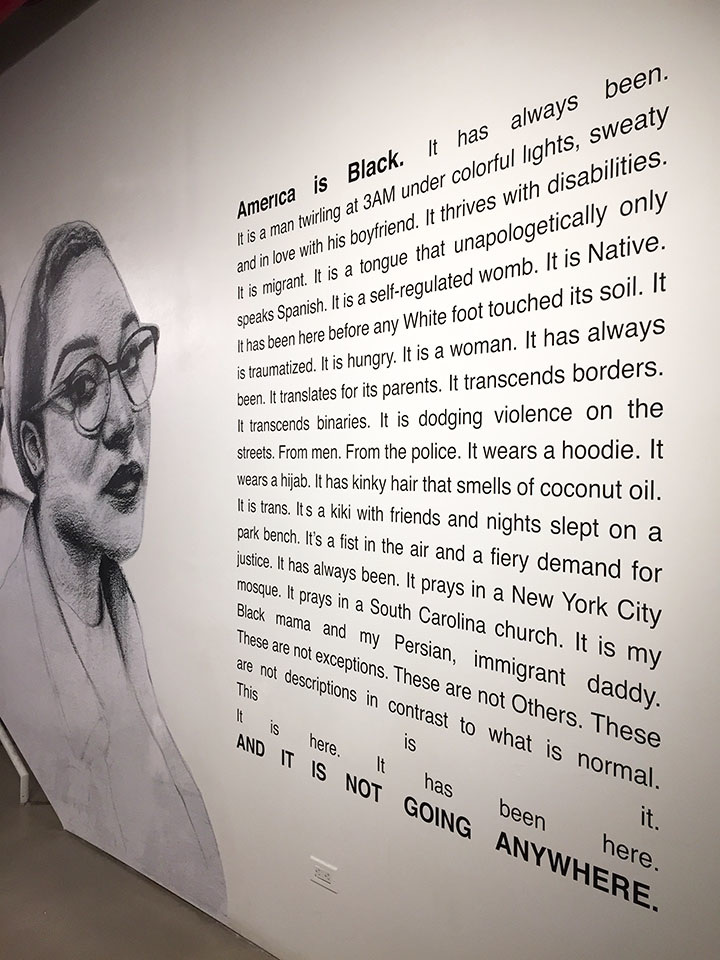
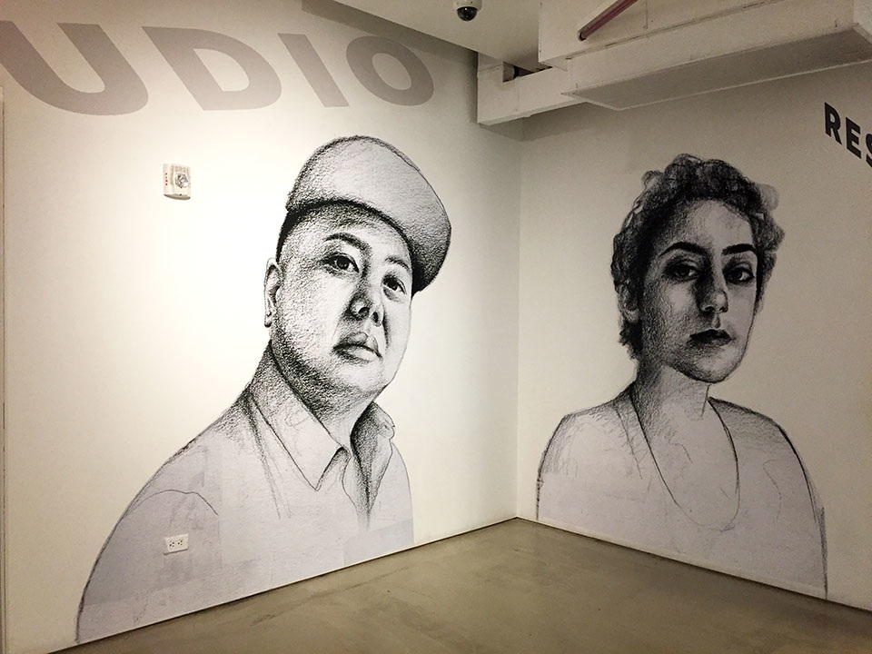
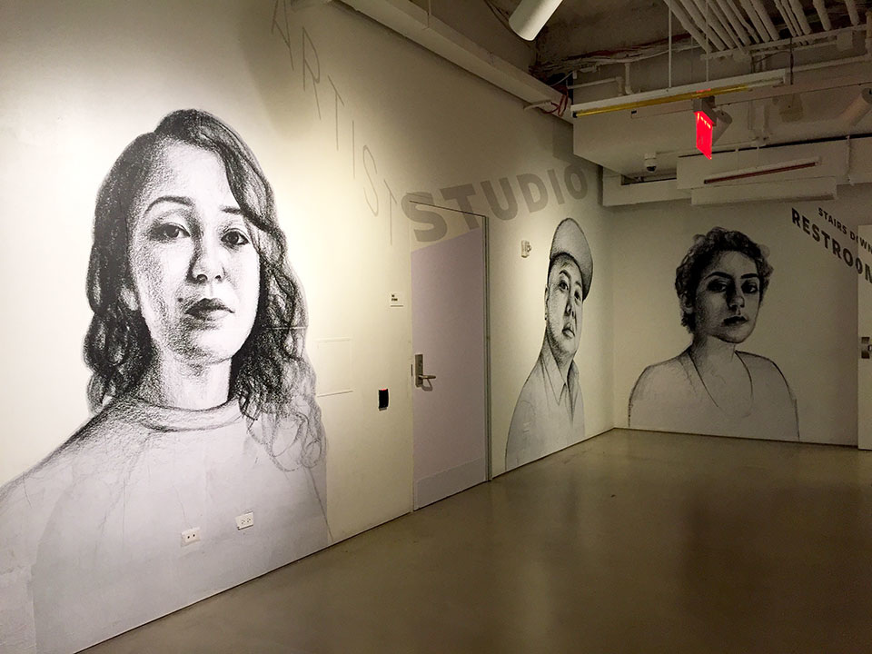

Not Going Anywhere was an indoor, wheatpasted installation of portraits of American artists and activists. Directly challenging the xenophobic and misogynistic rhetoric now dominating American discourse, subjects of this work assert that they are not going anywhere. The subjects in this work are people that I interviewed in Brooklyn in November, following the 2016 election, and in Washington D.C. on inauguration day. This installation included audio of the interviews. Not Going Anywhere was on view at BRIC Arts Media, February - May 2017
   